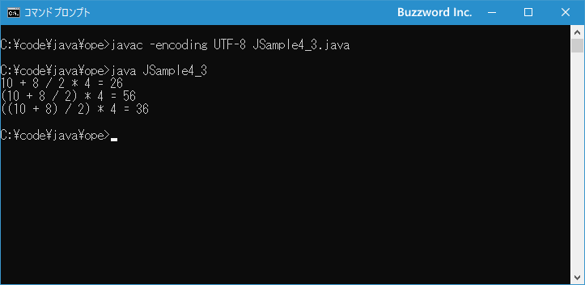

演算子の優先順位と結合規則
式の中で使用される演算子が一つの場合はいいのですが、複数の演算子が使用されている場合はどの演算子から演算を行うのかによって結果が異なる場合があります。そこで演算子には優先順位が決められており、どの演算子から演算が行われるのかルールに決められた通りに行われるようになっています。ここでは演算子の優先順位と、同じ優先順位の演算子が並んでいた場合の結合規則について解説します。
演算子の優先順位
式の中に複数の演算子が含まれている場合、どの演算子から演算を行うのかによって結果が異なる場合があります。次のサンプルをみてください。
int num; num = 10 + 5 * 4;
+ と * の 2 つの演算子が使用されています。もし + の演算子から先に演算した場合は次のように変数 num には 60 が代入されます。
1) 10 + 5 = 15 2) 15 * 4 = 60 3) num = 60
それに対して * の演算子から先に演算した場合は次のように変数 num には 30 が代入されます。
1) 5 * 4 = 20 2) 10 + 20 = 30 3) num = 30
このようにどちらの演算子を先に演算するのかによって結果が異なります。
そこで演算子には優先順位が決められています。優先順位が高い演算子から先に演算が行われると決まっているので、プログラムを記述する側も複数の演算子を記述した場合にどのような結果となるのかが明確に分かります。
-- 優先順位が高い --
| 結合規則 | 演算子 |
|---|---|
| 左 | (引数) [配列添字] . ++ --(後置き) |
| 右 | ! ~ + -(単項演算子) ++ --(前置き) |
| 左 | new (型変換) |
| 左 | * / % |
| 左 | + -(算術演算子) |
| 左 | << >> >>> |
| 左 | > >= < <= instanceof |
| 左 | == != |
| 左 | & |
| 左 | ^ |
| 左 | | |
| 左 | && |
| 左 | || |
| 右 | ?: |
| 左 | = += -= *= /= %= <<= >>= >>>= &= |= ^= |
-- 優先順位が低い --
※ + と - については単項演算子として使用する場合と算術演算子として使用する場合で優先順位が異なります。 ++ と -- については後置きか前置きかで優先順位が異なります。 () については引数を指定する場合と型変換を行う場合で優先順位が異なります。
上にある演算子ほど優先順位が高くなっています。例えば * は(算術演算子の) + よりの優先順位が高いため、同じ式の中で * と + が使用されていた場合は先に * が演算されます。
先ほどのサンプルをもう一度みてください。
int num; num = 10 + 5 * 4;
2 行目の文では + と * に加えて = という演算子も使用されています。ただ = の演算子は優先順位が一番低いため、 = の右側の演算がすべて行われたあとで最後に = 演算子によって左辺の変数へ代入が行わます。
また同じ行にある演算子は優先順位が同じです。例えば算術演算子の + と - は同じ優先順位です。優先順位が同じ場合はこの後で解説する結合規則によって決まります。
※ なお括弧を使用することで演算子の優先順位や結合規則に関わらず特定の演算を優先して行うこともできます。このページの後半で解説します。
それでは簡単なサンプルプログラムを作って試してみます。テキストエディタで次のように記述したあと、 JSample2-1.java という名前で保存します。
class JSample4_1{
public static void main(String[] args){
int n1 = 10 * 5 + 4;
int n2 = 4 + 10 * 5;
System.out.println("10 * 5 + 4 = " + n1);
System.out.println("4 + 10 * 5 = " + n2);
}
}
コンパイルを行います。
javac -encoding UTF-8 JSample4_1.java
その後で、次のように実行してください。
java JSample4_1
優先順位が異なる演算子の場合は、記述した順序に関係なく優先順位の高いものから順に演算されるため同じ結果となることが確認できました。
演算子の結合規則
優先順位が同じだった場合に、どの演算子から演算を行うのかを定めたものが結合規則です。左結合または右結合の 2 種類があり、演算子によってどちらの結合が行われるのかが異なります。先ほどの演算子の優先順位の一覧で左または右と書かれたいたのが結合規則となります。
次のサンプルを見てください。
int num = 10 - 5 - 3;
右辺の式の中で - 演算子が 2 回使用されています。同じ演算子なので優先順位は同じのため、どちらの演算子から先に演算が行われるのかは結合規則によって決まります。もし左結合だった場合には左にある演算子から演算が行われるため次のような結果となります。
1) 10 - 5 = 10 2) 5 - 3 = 2 3) num = 2
もし右結合だった場合には右にある演算子から演算が行われるため次のような結果となります。
1) 5- 3 = 2 2) 10 - 2 = 8 3) num = 8
このように左結合か右結合かによって結果が異なる場合があります。(例えば + 演算子であればどちらから演算を行っても同じ結果となります)。 - 演算子は左結合のため実際の結果は変数 num には 2 が代入されることなります。
ほとんどの演算子は左結合ですので、右結合の演算子を使用する場合に注意されてください。
それでは簡単なサンプルプログラムを作って試してみます。テキストエディタで次のように記述したあと、 JSample2-1.java という名前で保存します。
class JSample4_2{
public static void main(String[] args){
int n = 10 - 5 - 3;;
System.out.println("10 - 5 - 3 = " + n);
}
}
コンパイルを行います。
javac -encoding UTF-8 JSample4_2.java
その後で、次のように実行してください。
java JSample4_2

優先順位が同じ演算子が複数使用されていた場合には、結合規則によって決まった順番に演算が行われていることが確認できました。
括弧()を使った優先順位の変更
式の中に複数の演算子が含まれている場合、演算が行われる順番は演算子の優先順位と結合規則によって決まります。次のサンプルでは = の右辺の式の中で * と + の 2 つの演算子が使われていますが、優先順位が高い * の方が先に演算が行われます。
int num; num = 10 + 5 * 4;
ただ演算子の優先順位とは異なるけれど、先に演算を行いたい場合があります。例えば先ほどのサンプルで + の演算子の演算を先に行いたい場合です。このような場合は優先したい演算の部分を ( と ) で囲むことで先に演算を行わせることができます。
次のサンプルを見てください。
int num; num = (10 + 5) * 4;
括弧で囲まれた中の演算は優先順位に関係なく優先的に行われます。よってこのサンプルでは次のような順番に演算が行われます。
1) 10 + 5 = 15 2) 15 * 4 = 60 3) num = 60
括弧の中に複数の演算子が含まれていた場合には、括弧の中だけで演算子の優先順位や結合規則にし従って演算される順番が決まります。次のサンプルを見てください。
int num; num = (10 + 8 / 2) * 4;
括弧で囲まれた中の演算は優先順位に関係なく優先的に行われます。括弧内では優先順位などによって順番が決まります。よってこのサンプルでは次のような順番に演算が行われます。
1) 8 / 2 = 4 2) 10 + 4 = 14 3) 14 * 4 = 56 4) num = 56
なお括弧の中でさらに括弧を使って演算が実行される順位を変更することもできます。次のサンプルを見てください。
int num; num = ((10 + 8) / 2) * 4;
このサンプルでは次のような順番に演算が行われます。
1) 10 + 8 = 18 2) 18 / 2 = 9 3) 9 * 4 = 36 4) num = 36
このように式の中の一部分を括弧で囲むことで、優先順位や結合規則に関わらず優先的に演算を行わせることができるようになります。
それでは簡単なサンプルプログラムを作って試してみます。テキストエディタで次のように記述したあと、 JSample2-1.java という名前で保存します。
class JSample4_3{
public static void main(String[] args){
int n1 = 10 + 8 / 2 * 4;
int n2 = (10 + 8 / 2) * 4;
int n3 = ((10 + 8) / 2) * 4;
System.out.println("10 + 8 / 2 * 4 = " + n1);
System.out.println("(10 + 8 / 2) * 4 = " + n2);
System.out.println("((10 + 8) / 2) * 4 = " + n3);
}
}
コンパイルを行います。
javac -encoding UTF-8 JSample4_3.java
その後で、次のように実行してください。
java JSample4_3

括弧を使用することで演算子の優先順位や結合規則に関わらず特定の演算を優先して行えることを確認できました。
-- --
演算子の優先順位と、同じ優先順位の演算子が並んでいた場合の結合規則について解説しました。
( Written by Tatsuo Ikura )

著者 / TATSUO IKURA
初心者～中級者の方を対象としたプログラミング方法や開発環境の構築の解説を行うサイトの運営を行っています。